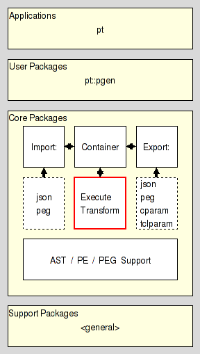

pt::rde - Parsing Runtime Support, PARAM based
Are you lost ? Do you have trouble understanding this document ? In that case please read the overview provided by the Introduction to Parser Tools. This document is the entrypoint to the whole system the current package is a part of.
This package provides a class whose instances provide the runtime support for recursive descent parsers with backtracking, as is needed for the execution of, for example, parsing expression grammars. It implements the PackRat Machine Specification, as such that document is required reading to understand both this manpage, and the package itself. The description below does make numerous shorthand references to the PARAM's instructions and the various parts of its architectural state.
The package resides in the Execution section of the Core Layer of Parser Tools.

Note: This package not only has the standard Tcl implementation, but also an accelerator, i.e. a C implementation, based on Critcl.
The package exports the API described here.
The command creates a new runtime object for a recursive descent parser with backtracking and returns the fully qualified name of the object command as its result. The API of this object command is described in the section Object API. It may be used to invoke various operations on the object.
All objects created by this package provide the following 63 methods for the manipulation and querying of their state, which is, in essence the architectural state of a PARAM.
First some general methods and the state accessors.
This method destroys the object, releasing all claimed memory, and deleting the associated object command.
This method resets the state of the runtme to its defaults, preparing it for the parsing of the character in the channel chan, which becomes IN.
Note here that the Parser Tools are based on Tcl 8.5+. In other words, the channel argument is not restricted to files, sockets, etc. We have the full power of reflected channels available.
It should also be noted that the parser pulls the characters from the input stream as it needs them. If a parser created by this package has to be operated in a push aka event-driven manner it will be necessary to go to Tcl 8.6+ and use the coroutine::auto to wrap it into a coroutine where read is properly changed for push-operation.
This method completes parsing, either returning the AST made from the elements of ARS, or throwing an error containing the current ER.
This method returns the handle of the channel which is IN.
This method returns the line number for the position IN is currently at. Note that this may not match with the line number for CL, due to backtracking.
This method returns the column for the position IN is currently at. Note that this may not match with the column for CL, due to backtracking.
This method returns CC.
This method returns CL.
This method returns the LS. The topmost entry of the stack will be the first element of the returned list.
This method returns ST.
This method returns SV.
This method returns ER. This is either the empty string for an empty ER, or a list of 2 elements, the location the error is for, and a set of messages which specify which symbols were expected at the location. The messages are encoded as one of the possible atomic parsing expressions (special operators, terminal, range, and nonterminal operator).
This method returns ES. The topmost entry of the stack will be the first element of the returned list. Each entry is encoded as described for error.
This method returns the part of TC for the range of locations of IN starting at from and ending at to. If to is not specified it is taken as identical to from. If neither argument is specified the whole of TC is returned.
Each token in the returned list is a list of three elements itself, containing the character at the location, and the associated line and column numbers, in this order.
This method returns a dictionary containing NC. Keys are two-element lists containing nonterminal symbol and location, in this order. The values are 4-tuples containing CL, ST, ER, and SV, in this order. ER is encoded as specified for the method error.
This method returns a list containing the keys of SC. They are encoded in the same manner as is done by method symbols.
This method returns ARS. The topmost entry of the stack will be the first element of the returned list
This method returns AS. The topmost entry of the stack will be the first element of the returned list
This is a convenience method returning the topmost element of ARS.
This method returns the line and column numbers for the specified location of IN, assuming that this location has already been reached during the parsing process.
The following methods implement all PARAM instructions. They all have the prefix "i_".
The control flow is mainly provided by Tcl's builtin commands, like if, while, etc., plus a few guarded variants of PARAM instructions and Tcl commands.. That means that these instruction variants will do nothing if their guard condition is not fulfilled. They can be recognized by the prefix "i:ok_" and "i:fail_", which denote the value ST has to have for the instruction to execute.
The instructions are listed in the same order they occur in the PackRat Machine Specification, with the guard variants listed after their regular implementation, if any, or in their place.
This method implements the PARAM instruction input_next.
This method implements the PARAM instruction test_alnum.
This method implements the PARAM instruction test_alpha.
This method implements the PARAM instruction test_ascii.
This method implements the PARAM instruction test_char.
This method implements the PARAM instruction test_ddigit.
This method implements the PARAM instruction test_digit.
This method implements the PARAM instruction test_graph.
This method implements the PARAM instruction test_lower.
This method implements the PARAM instruction test_print.
This method implements the PARAM instruction test_punct.
This method implements the PARAM instruction test_range.
This method implements the PARAM instruction test_space.
This method implements the PARAM instruction test_upper.
This method implements the PARAM instruction test_wordchar.
This method implements the PARAM instruction test_xdigit.
This method implements the PARAM instruction error_clear.
This method implements the PARAM instruction error_push.
This method implements the PARAM instruction error_pop_merge.
This method implements the PARAM instruction error_nonterminal.
This method implements the PARAM instruction status_ok.
This method implements the PARAM instruction status_fail.
This method implements the PARAM instruction status_negate.
This method implements the PARAM instruction loc_push.
This method implements the PARAM instruction loc_pop_discard.
This method implements the PARAM instruction loc_pop_rewind.
This guarded method, a variant of i_loc_pop_rewind, executes only for "ST == ok".
This method is a convenient combination of control flow and the two PARAM instructions loc_pop_rewind and loc_pop_discard. The former is executed for "ST == fail", the latter for "ST == ok".
This method implements the PARAM instruction symbol_restore.
The boolean result of the check is returned as the result of the method and can be used with standard Tcl control flow commands.
This method implements the PARAM instruction symbol_save.
This method implements the PARAM instruction value_clear.
This method is a convenient combination of control flow and the two PARAM instructions value_clear and value_leaf. The former is executed for "ST == fail", the latter for "ST == ok".
This method is a convenient combination of control flow and the two PARAM instructions value_clear and value_reduce. The former is executed for "ST == fail", the latter for "ST == ok".
This method implements a guarded variant of the the PARAM instruction ast_value_push, which executes only for "ST == ok".
This method implements the PARAM instruction ast_push.
This method implements the PARAM instruction ast_pop_rewind.
This guarded method, a variant of i_ast_pop_rewind, executes only for "ST == fail".
This method is a convenient combination of control flow and the two PARAM instructions ast_pop_rewind and ast_pop_discard. The former is executed for "ST == fail", the latter for "ST == ok".
This method implements the PARAM instruction ast_pop_discard.
This method is a convenient combination of control flow and the two PARAM instructions ast_pop_discard and ast_pop_rewind. The former is executed for "ST == fail", the latter for "ST == ok".
This guarded method executes only for "ST == ok". Then it aborts the current iteration of the innermost loop in the calling Tcl procedure.
This guarded method executes only for "ST == fail". Then it aborts the current iteration of the innermost loop in the calling Tcl procedure.
This guarded method executes only for "ST == fail". Then it aborts the calling Tcl procedure.
This guarded method executes only for "ST == ok". Then it aborts the calling Tcl procedure.
The next set of methods are super instructions, meaning that each implements a longer sequence of instructions commonly used in parsers. The combinated instructions of the previous set, i.e. those with names matching the pattern "i_*/*", are actually super instructions as well, albeit with limited scope, handling 2 instructions with their control flow. The upcoming set is much broader in scope, folding as much as six or more PARAM instructions into a single method call.
In this we can see the reasoning behind their use well:
By using less instructions the generated parsers become smaller, as the common parts are now truly part of the common runtime, and not explicitly written in the parser's code over and over again.
Using less instructions additionally reduces the overhead associated with calls into the runtime, i.e. the cost of method dispatch and of setting up the variable context.
Another effect of the super instructions is that their internals can be optimized as well, especially regarding control flow, and stack use, as the runtime internals are accessible to all instructions folded into the sequence.
This method combines
i_loc_push i_error_clear i_error_push
Parsers use it at the beginning of void sequences and choices with a void initial branch.
This method combines
i_loc_push i_error_clear i_error_push
Parsers use it at the beginning of optional and repeated expressions.
This method combines
i_ast_push i_loc_push i_error_clear i_error_push
Parsers use it at the beginning of sequences generating an AST and choices with an initial branch generating an AST.
This method combines
i_error_pop_merge i_loc_pop_rewind/discard
Parsers use it at the end of void sequences and choices whose last branch is void.
This method combines
i_error_pop_merge i_loc_pop_rewind/discard i_status_ok
Parsers use it at the end of optional expressions
This method combines
i_error_pop_merge i_ast_pop_rewind/discard i_loc_pop_rewind/discard
Parsers use it at the end of sequences generating ASTs and choices whose last branch generates an AST
This method combines
i_loc_push i_ast_push
Parsers use it at the beginning of negative lookahead predicates which generate ASTs.
This method combines
i_loc_pop_rewind i_status_negate
Parsers use it at the end of void negative lookahead predicates.
This method combines
i_ast_pop_discard/rewind i_loc_pop_rewind i_status_negate
Parsers use it at the end of negative lookahead predicates which generate ASTs.
This method combines
i_loc_pop_rewind/discard i:fail_return
Parsers use it to stop a positive repetition when its first, required, expression fails.
This method combines
i_error_pop_merge i_loc_pop_rewind/discard i:fail_status_ok i:fail_return
Parsers use it at the end of repetitions.
This method combines
i_error_pop_merge i:ok_loc_pop_discard i:ok_return i_loc_rewind i_error_push
Parsers use it when transiting between branches of a choice when both are void.
This method combines
i_error_pop_merge i:ok_loc_pop_discard i:ok_return i_ast_push i_loc_rewind i_error_push
Parsers use it when transiting between branches of a choice when the failing branch is void, and the next to test generates an AST.
This method combines
i_error_pop_merge i_ast_pop_rewind/discard i:ok_loc_pop_discard i:ok_return i_loc_rewind i_error_push
Parsers use it when transiting between branches of a choice when the failing branch generates an AST, and the next to test is void.
This method combines
i_error_pop_merge i_ast_pop_discard i:ok_loc_pop_discard i:ok_return i_ast_rewind i_loc_rewind i_error_push
Parsers use it when transiting between branches of a choice when both generate ASTs.
This method combines
i_error_pop_merge i:fail_loc_pop_rewind i:fail_return i_error_push
Parsers use it when transiting between parts of a sequence and both are void.
This method combines
i_error_pop_merge i:fail_loc_pop_rewind i:fail_return i_ast_push i_error_push
Parsers use it when transiting between parts of a sequence and the sucessfully matched part is void, and after it an AST is generated.
This method combines
i_error_pop_merge i:fail_ast_pop_rewind i:fail_loc_pop_rewind i:fail_return i_error_push
Parsers use it when transiting between parts of a sequence and both parts generate ASTs.
This method combines
if/found? i_symbol_restore $symbol i:found:ok_ast_value_push i:found_return i_loc_push i_ast_push
Parsers use it at the beginning of a nonterminal symbol generating an AST, whose right-hand side may have generated an AST as well.
This method combines
if/found? i_symbol_restore $symbol i:found:ok_ast_value_push i:found_return i_loc_push i_ast_push
Parsers use it at the beginning of a void nonterminal symbol whose right-hand side may generate an AST.
This method combines
if/found? i_symbol_restore $symbol i:found_return i_loc_push i_ast_push
Parsers use it at the beginning of a nonterminal symbol generating an AST whose right-hand side is void.
This method combines
if/found? i_symbol_restore $symbol i:found_return i_loc_push
Parsers use it at the beginning of a void nonterminal symbol whose right-hand side is void as well.
This method combines
i_value_clear/reduce $symbol i_symbol_save $symbol i_error_nonterminal $symbol i_ast_pop_rewind i_loc_pop_discard i:ok_ast_value_push
Parsers use it at the end of a non-terminal symbol generating an AST using the AST generated by the right-hand side as child.
This method combines
i_value_clear/leaf $symbol i_symbol_save $symbol i_error_nonterminal $symbol i_loc_pop_discard i:ok_ast_value_push
Parsers use it at the end of a non-terminal symbol generating an AST whose right-hand side is void.
This method combines
i_value_clear/leaf $symbol i_symbol_save $symbol i_error_nonterminal $symbol i_loc_pop_discard i_ast_pop_rewind i:ok_ast_value_push
Parsers use it at the end of a non-terminal symbol generating an AST discarding the AST generated by the right-hand side.
This method combines
i_value_clear i_symbol_save $symbol i_error_nonterminal $symbol i_loc_pop_discard i_ast_pop_rewind
Parsers use it at the end of a void non-terminal symbol, discarding the AST generated by the right-hand side.
This method combines
i_value_clear i_symbol_save $symbol i_error_nonterminal $symbol i_loc_pop_discard
Parsers use it at the end of a void non-terminal symbol with a void right-hand side.
These methods all combine
i_input_next $msg i:fail_return
with the appropriate i_test_xxx instruction. Parsers use them for handling atomic expressions.
This document, and the package it describes, will undoubtedly contain bugs and other problems. Please report such in the category pt of the Tcllib Trackers. Please also report any ideas for enhancements you may have for either package and/or documentation.
EBNF, LL(k), PEG, TDPL, context-free languages, expression, grammar, matching, parser, parsing expression, parsing expression grammar, push down automaton, recursive descent, state, top-down parsing languages, transducer
Parsing and Grammars
Copyright © 2009 Andreas Kupries <andreas_kupries@users.sourceforge.net>